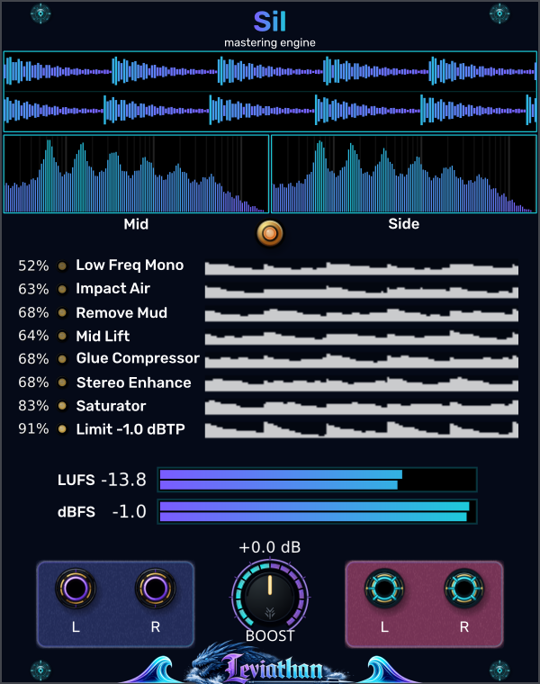

Waveform history
Top display
Two traces show the left and right output over about ten seconds. Look here for the shape of attacks and sustained passages. The vertical scale adapts; use the level meters to compare actual output level.
Leviathan for VCV Rack 2 · Open Source
A firmer foundation.
Clearer detail. A more cohesive mix.
An adaptive stereo mastering chain that listens to the signal and makes small, coordinated changes to tone, dynamics and space. This guide follows the sound through all eight stages.

First patch
Panel breakdown
Follow the panel from analysis at the top to audio connections at the bottom. Select a numbered marker to jump to its description.
Top display
Two traces show the left and right output over about ten seconds. Look here for the shape of attacks and sustained passages. The vertical scale adapts; use the level meters to compare actual output level.
Below the waveform
The left pane shows shared content (Mid); the right shows channel differences (Side). Use them to see where the center and stereo detail sit in frequency. These are views of the audible output, not before/after EQ curves.
Orange button below the spectra
Click to enable or disable the complete mastering chain. Disabled, you hear the delay-matched original without Boost or limiting. Use this button for the listening comparisons throughout this guide.
Eight labeled rows
Each row has an activity percentage, a light and a short history strip. The labels follow the audio path from Low Freq Mono through the limiter. These are readouts, not individual stage switches. See how each percentage is calculated.
LUFS and dBFS bars
LUFS tracks momentary loudness; dBFS tracks sample peaks. Each pair of bars shows the two output channels. Watch these while comparing level and while increasing Boost. They follow the audible output with Mastering on or off.
Center knob and dB readout
Turn from 0 to +6 dB to raise the signal entering the final limiter. Start at 0 dB. As the limiter catches more peaks, listen for greater density and softer attacks. Read about Boost and limiting.
Purple jacks at bottom left
Connect the left and right outputs of your mix here. For mono, connect either jack alone; Sil copies it to the missing side. Each jack reads channel 1, so mix polyphonic sources down upstream.
Cyan jacks at bottom right
Connect these to your stereo monitoring or recording path. Each output carries one channel. With Mastering enabled, this is the complete processed result; disabled, it is the delayed original.
Signal architecture
Audio passes through the stages in this order. Each stage hears the result of the preceding processing, so a small change early in the chain can change what a later detector decides to do. Select a stage to read what it adds to the sound.
The order has a purpose: establish a reliable low end, adjust tonal balance, settle dynamics, refine the stereo image, then add density before the final peak control. The limiter also reports recent activity back to Mid Lift and Saturator so they can ease off when headroom is tight.
Stage 01
A steadier, more centered bass foundation.
Sil splits the signal at 120 Hz with a matched fourth-order Linkwitz–Riley crossover. It measures how closely the left and right low bands agree. As correlation falls, it reduces their difference and blends toward a centered reference derived from one input channel, with energy control to keep the recovery bounded.
Wide or phase-opposed bass can become more solid and survive mono playback better. The lowest part of the image moves toward the center while upper frequencies retain their stereo information. Already centered, correlated bass should need little recovery.
This is more than averaging L and R: a simple average could cancel opposing bass. Sil deliberately changes the low-band mono sum to recover that foundation. It does not synthesize a missing sub-octave.
Stage 02
A small flash of brightness with low-end impact.
A fast envelope and a slower envelope follow the recovered low-band Mid signal. A sudden rise above the slower envelope opens a high shelf at 1 kHz, with up to 0.75 dB of lift. The lift rises and falls smoothly around the event.
On a kick-driven mix, listen for the upper edge of the mix to become slightly more articulate as the kick hits. Existing clicks, percussion and brighter textures can briefly stand out. A sustained bass drone should trigger much less of this effect.
The trigger is in the bass; the EQ change is in the highs. This stage lifts existing high-frequency content across the mix, so a pure low sine will not suddenly acquire a bright attack from this shelf alone.
Stage 03
Less low-mid clouding; more room between sounds.
The detector compares energy around 180–520 Hz with bass and presence references. Additional narrow-band checks favor broad buildup over an isolated tone. When excess is detected, a broad bell centered at 315 Hz cuts by up to 2.5 dB in both channels.
Dense pads, overlapping bass parts and roomy percussion can sound less woolly or boxy. Kick and melodic detail may become easier to separate. On material that is already lean, the stage should contribute little.
This is selective cleanup, not a permanent low-mid scoop. If the full result feels thinner, compare the same passage with Mastering off before adding more Boost.
Stage 04
A little more body and definition in the musical center.
After mud removal, Sil compares the core midrange with lower and higher reference bands. When the core appears recessed, a broad bell at 1.45 kHz adds up to 0.85 dB. Mud-removal activity gently encourages this response; strong upper presence and heavier limiting restrain it.
A recessed lead, vocal-like synth or chord texture may become easier to follow without a large volume change. Listen for definition and presence returning after low-mid cleanup. Already forward or bright material should receive less lift.
“Mid” here means midrange frequencies. This bell is applied to both left and right channels; it is different from the Mid/Side processing used by Stereo Enhance.
Stage 05
A more settled mix, with gentler level contrasts.
A stereo-linked RMS compressor uses a 1.5:1 ratio, a soft knee, roughly 30 ms attack and 250 ms release. Its threshold follows about ten seconds of incoming program history at this stage. A 90 Hz high-pass in the detector reduces the bass’s influence on compression. Gain reduction is capped at 3 dB, with partial automatic makeup.
Busy passages can feel more cohesive as louder moments are gently held back. The attack allows some initial transient through; the release smooths the body that follows. Both channels receive the same gain change, helping keep the image stable.
The 90 Hz filter is in the detector, not the audio path. Partial makeup means compression can still lower the level somewhat; this is gentle dynamic control rather than automatic loudness matching.
Stage 06
More space around the center, with clearer stereo detail.
Sil separates Mid, the shared component (L + R)/2, from Side, the difference (L − R)/2. It can cut a narrow excess around 350 Hz in Mid by up to 2 dB, and lift a broad region around 6 kHz in Side by up to 2 dB. The two decisions are independent; an already bright Side receives less lift.
A congested center may clear slightly, while panned percussion, chorus and reverb edges become more apparent. The image can feel more open without moving the recovered bass away from the center.
Identical left and right inputs have no Side content to brighten, so this stage does not turn a mono source into stereo. Its center cleanup can still act on a mono signal.
Stage 07
More density and a softly rounded edge.
A recent-peak history of about eight seconds guides makeup and drive. Sil blends in a biased arctangent waveshaper, which adds harmonic color and rounds peaks. It gradually reduces the nonlinear contribution near neutral settings and removes DC introduced by that contribution. Limiter feedback encourages a little more level when there is room and backs off when limiting becomes heavy.
Quieter material can feel fuller and more present; sharp edges may become smoother as harmonics fill out the sound. Expect restrained coloration rather than an abrupt distortion effect. Hot material can leave less room for additional makeup.
The internal makeup limit is 3.25 dB, but that is not a promise of 3.25 dB more output: shaping, blending and the final limiter all affect the result. Adaptation follows recent peaks, not an integrated LUFS target.
Stage 08
Controlled peaks, with increasing density as you add Boost.
Boost adds 0–6 dB after saturation, feeding a stereo-linked lookahead limiter. Oversampled and interpolated peak estimates anticipate overshoot; a short attack ramp and a final sample guard control the output. The nominal ceiling is −1 dB relative to Sil’s 5 V full-scale reference, about ±4.46 V.
Below the limiting threshold, more Boost mainly increases level. Once peaks reach the ceiling, additional Boost brings the body up relative to those peaks. Occasional catches may be subtle; sustained limiting can soften attacks and reduce the feeling of punch.
The detector includes a 0.5 dB margin. The dBTP panel label describes the intended true-peak control: the implementation uses an estimate, not a certified reconstruction guarantee. The lower dBFS meter measures sample peaks, not true peaks.
Panel & meters
The orange button beneath the spectra switches the whole chain. Disabled, it plays a delayed copy of the original input, without Boost or limiting. A roughly 10 ms crossfade softens the transition. The processing continues tracking the source while disabled, and the dry path is delayed to match the limiter’s latency.
The bottom knob adds 0–6 dB at the final limiter input; its readout shows the setting. It is not an overall “more mastering” control. The earlier adaptive stages use unboosted limiter feedback so they do not simply compensate away your Boost setting.
The top display shows about ten seconds of left and right output waveform history. Its scale adapts, so use the numerical meters for level comparisons rather than judging loudness from waveform height alone.
The two spectrum panes show shared content on the left and difference content on the right, rather than the left and right audio channels. A mono source can have a busy Mid display and an empty Side display. The displays follow the audible output, including when Mastering is disabled.
Paired bars show the two output channels. LUFS uses K-weighted, approximately 400 ms momentary measurements; dBFS uses sample peaks over approximately 100 ms. These are live readings, not an integrated whole-track loudness report. Sil uses 5 V as 0 dBFS and does not automatically master to a selected LUFS value.
Right-click → Visuals → Color Scheme selects Default (Purple/Cyan), Classic (Green/Red), Monochrome (Gray/White), or Fire (Red/Yellow). This changes the visualization, not the processing.
The dots, numbers and short history strips report smoothed stage activity. They are indicators, not controls. Their scales differ: 50% on one row does not mean the same gain change as 50% on another, and none is a whole-chain wet/dry percentage.
| Panel row | What its activity represents |
|---|---|
| Low Freq Mono | Low-band Side power removed relative to full-band input power, with smoothing. It is not simply the amount of mono folding. |
| Impact Air | Applied shelf lift relative to its 0.75 dB maximum. |
| Remove Mud | Applied cut relative to its 2.5 dB maximum. |
| Mid Lift | Applied lift relative to its 0.85 dB maximum. |
| Glue Compressor | Gain reduction relative to the 3 dB cap, before partial makeup. |
| Stereo Enhance | Average of the normalized Mid cut and Side lift. One at maximum and the other inactive gives about 50%. |
| Saturator | A blend of makeup and drive activity, gated by signal presence; not harmonic distortion percentage. |
| Limit −1.0 dBTP | Fraction of amplitude removed by the limiter, smoothed for display. For example, 50% corresponds to roughly 6 dB of attenuation before smoothing, not 50% clipped samples. |
Disabling Mastering lets the stage indicators fade toward zero; their history strips can still show earlier activity.
Listening comparisons
Use the Mastering button to compare the complete chain on a repeating passage. Bring the louder version down with a downstream monitor trim when judging tone: a level increase can make a result seem clearer even when the main change is gain. Sil’s bypass matches delay, not perceived loudness.
Listen for a steadier bass center, less clouding behind the kick, and brighter edges arriving with bass impacts. Watch Low Freq Mono, Impact Air and Remove Mud for clues. As Boost rises, compare the kick’s attack against its body.
Listen for space around the center and clearer high-frequency detail at the edges. Stereo Enhance needs existing differences between left and right. A sustained texture may show little Impact Air activity because it has few new low-end attacks.
Patch a single input and listen for small changes in midrange definition, density and dynamics. The Side spectrum should remain empty. This is a useful way to separate tonal enhancement from the impression of stereo widening.
Let both sections run long enough to hear adaptation settle. Glue follows program level and Saturator follows recent peaks, so the response after a loud passage can differ from a fresh start. Listen over phrases rather than rapid button toggles.
The source may already fit the detectors’ preferred balance, have little stereo information, or leave the limiter inactive. Start at 0 dB Boost, allow time for adaptation and compare a full passage. Low activity is not a fault.
Extra Boost can push more of the signal into limiting. Reduce Boost and compare the transient against the sustained body. If limiting remains heavy at 0 dB, reduce the source level feeding Sil.
Low Freq Mono intentionally reduces poorly correlated low-frequency Side content. That can stabilize bass on mono playback, but it also changes deliberate stereo bass movement. Compare the artistic result with Mastering disabled.
Sil adds about 1.5 ms of limiter delay at ordinary sample rates, and its crossover and EQ also change phase. Its own Mastering comparison delays the dry path, but an external parallel cable does not automatically match that timing or filter phase.
Reference
Checked against the local Leviathan-Rack2 implementation in Sil.cpp, SilLowBandRecovery.hpp and SilLevelMeter.hpp, October 2026. Sound descriptions explain expected behavior from the signal processing; the amount heard depends on the source. Stage frequencies and limits describe this implementation, rather than user-adjustable settings.